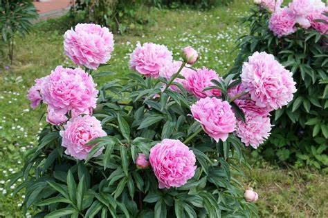

Pinavija

Pinavija, dar žinoma kaip bijūnas (Paeonia), yra bijūninių (Paeoniaceae) šeimos augalas. Tai gali būti žoliniai arba sumedėję augalai, kurie pasiekia 50–150 cm aukštį. Bijūnai turi stambius, įvairių spalvų žiedus ir yra labai populiarūs dėl savo grožio ir malonaus aromato.